Stable Isotope Trajectory Analysis (SITA)
Anthony STURBOIS
2025-05-05
Source:vignettes/SITA.Rmd
SITA.Rmd1. About this vignette
This vignette present some ecological applications used by Sturbois et al. (2021) in the new stable isotope trajectory analysis framework:
- Sturbois, et al., Stable Isotope Trajectory Analysis (SITA): A new approach to quantify and visualize dynamics in stable isotope studies. Ecol. Monogr. (2021). https://doi.org/10.1002/ecm.1501
Example datasets have been included in the package for reproducibility. After the calculation of the necessary distance- and direction-based metrics, the vignette focuses, for each ecological applications, on the creation of trajectory charts.
2. Loading libraries
First of all, we load the required libraries, including
ecotraj:
## Loading required package: Rcpp## Loading required package: viridisLite##
## Attaching package: 'viridis'## The following object is masked from 'package:scales':
##
## viridis_pal3. Spatial and temporal resource partitioning in fur seals
3.1 Fur seal stable isotope dataset
We begin by loading the package dataset furseals:
data("furseals")This is a subset of the dataset provided in:
- Kernaléguen, L., Arnould, J.P.Y., Guinet, C., Cherel, Y., 2015. Determinants of individual foraging specialization in large marine vertebrates, the Antarctic and subantarctic fur seals. Journal of Animal Ecology 1081–1091.
Briefly, fur seals [the Antarctic fur seal Arctocephalus gazella (AFS) and subantarctic fur seal A. tropicalis (SAFS)] whisker SI values yield unique long-term information on individual behaviour which integrates the spatial, trophic and temporal dimensions of the ecological niche. The foraging strategies of this two species of sympatric fur seals were examined in the winter 2001/2002 at Crozet, Amsterdam and Kerguelen Islands (Southern Ocean) using the stable isotope values of serially sampled whiskers. The method consists in the analysis of consecutive whisker sections (3 mm long) starting from the proximal (facial) end, with the most recently synthesized tissue remaining under the skin. Only individuals (n = 47) with whiskers totalizing at least 30 sections were selected in the initial data, and only those 30 sections were considered herein, from t1 (more recent values) to t30 (oldest values).
3.2 Trajectory metrics on stable isotope 2D space
In this section, we illustrate how to calculate trajectory metrics to characterize the foraging strategy of each fur seal. In the following sections, we show how to use these metrics as data to create plots.
First, we calculate net changes relative to the initial state (i.e. the distance between stable isotope compositions (i.e state) of each whisker section and the initial stable isotope composition):
Net_changes<-trajectoryLengths2D(furseals[,c("d13C","d15N")],
furseals$ID_SITA,
furseals$Time, relativeToInitial=TRUE)
head(Net_changes)## Lt1_t2 Lt1_t3 Lt1_t4 Lt1_t5 Lt1_t6 Lt1_t7 Lt1_t8
## 1 0.08246211 1.0892314 2.0775851 2.3714985 2.20626585 1.7839633 1.6819920
## 2 0.59304131 0.9583074 0.8218643 0.2677928 0.08105554 0.7460168 0.4970191
## 3 0.23256182 1.4622975 3.0029069 2.8817373 2.55906428 1.6445066 1.6734124
## 4 1.24068086 2.1744498 2.3520872 2.4028260 2.28455422 2.2679323 0.9493714
## 5 1.80624915 3.0818595 3.8011940 4.4793800 4.50949775 4.3885128 2.9507619
## 6 1.13903687 4.3444610 4.0299700 6.4151503 5.96779901 6.0314152 7.2216151
## Lt1_t9 Lt1_t10 Lt1_t11 Lt1_t12 Lt1_t13 Lt1_t14 Lt1_t15
## 1 1.344206 1.2735702 1.0631895 0.7915611 0.8486489 1.0500638 1.1961910
## 2 1.092157 0.6772156 0.7744366 0.2702240 0.6136685 1.0261861 0.7000864
## 3 2.518128 2.0782324 1.7294097 1.1594387 1.7649975 2.7768920 2.4641059
## 4 0.577084 0.6049504 0.5920490 1.5973206 1.1985112 0.8119858 0.6936173
## 5 2.187465 0.9662236 2.6143697 2.7163971 2.7958673 2.6837384 2.2504011
## 6 7.173525 6.2867554 0.2478810 0.9972668 0.9076795 0.5088025 0.6640821
## Lt1_t16 Lt1_t17 Lt1_t18 Lt1_t19 Lt1_t20 Lt1_t21 Lt1_t22 Lt1_t23
## 1 1.5432880 1.6484832 1.6042908 1.6566572 1.108358 0.381577 0.3006742 1.4772136
## 2 0.5592397 0.4460235 0.6495922 0.7966461 1.787011 1.591433 1.5776276 1.6305889
## 3 0.2755014 0.4497755 0.6170292 0.2879392 1.103359 2.145421 2.1758332 2.1139858
## 4 0.3626927 0.7276160 0.9288983 0.7955941 2.352899 1.851222 2.2158782 2.3341939
## 5 1.8418754 1.8304906 1.8207087 1.5938494 1.553721 1.583789 1.5700115 0.6566011
## 6 3.6309179 4.0313501 6.0026223 6.9996921 6.341455 7.297884 7.5324814 6.1068566
## Lt1_t24 Lt1_t25 Lt1_t26 Lt1_t27 Lt1_t28 Lt1_t29 Lt1_t30
## 1 1.5890755 1.0783103 1.1172381 2.0638181 2.52046504 2.2934779 1.6320787
## 2 0.2046069 0.3937309 0.3849480 0.7032112 0.89491061 0.3901513 0.7480241
## 3 2.2036883 1.8413856 1.6354464 1.9473328 1.59052601 1.3147125 1.6315076
## 4 2.1019596 0.2814321 0.4237924 0.7473988 0.05360037 0.3889730 0.7375269
## 5 4.0823528 4.4187248 4.3025323 4.3520214 3.43035873 0.7908375 1.2435373
## 6 1.7282780 2.1873694 1.2698965 0.5391030 0.40993902 0.4085156 0.7709643
## Path
## 1 40.87543
## 2 21.87682
## 3 49.28114
## 4 36.05110
## 5 76.30333
## 6 107.19276We then calculate trajectory segment lengths, i.e. the distance between the stable isotope composition of consecutive whisker sections in the stable isotope space:
Segment_lengths<-trajectoryLengths2D(furseals[,c("d13C","d15N")],
furseals$ID_SITA,
furseals$Time, relativeToInitial=FALSE)
head(Segment_lengths)## S1 S2 S3 S4 S5 S6 S7
## 1 0.08246211 1.0799190 1.109759 0.39708060 0.16604819 0.69542793 0.1332817
## 2 0.59304131 0.4019664 0.165463 0.62878295 0.24977790 0.81093588 0.4377728
## 3 0.23256182 1.2719328 1.561554 0.13206059 0.81044432 1.21893232 0.3748826
## 4 1.24068086 0.9337907 0.177792 0.08732125 0.11957006 0.06462971 1.3506817
## 5 1.80624915 1.2835334 1.452408 1.22947021 0.05423099 0.33640006 1.4518034
## 6 1.13903687 3.2697465 1.007842 2.40400083 1.02618176 0.80004000 1.4924584
## S8 S9 S10 S11 S12 S13 S14
## 1 0.35206960 0.13800362 0.2119929 0.3940774 0.08004998 0.2026154 0.2040221
## 2 0.94680304 0.44818858 0.6290191 0.5362695 0.52697249 0.4552637 0.3411231
## 3 1.04072379 0.44107256 0.3592548 0.7240691 0.66598649 1.0131856 0.4798427
## 4 1.44655867 0.09009439 1.1117198 2.1338287 0.39901128 1.4341130 0.3064376
## 5 0.78147681 1.29231962 3.5747035 0.6261150 0.09265528 0.2502838 0.6440194
## 6 0.05115662 0.88680381 6.3555849 0.9913889 0.09047099 0.4029814 1.1639300
## S15 S16 S17 S18 S19 S20 S21
## 1 0.3703039 0.1632330 1.7046178 1.0355916 1.0132186 0.7423544 0.11970798
## 2 0.1554670 0.2837781 0.2257632 0.6603492 0.9904383 0.5893293 0.03956008
## 3 2.3198028 0.5979908 0.3078262 0.3993219 1.3487198 1.1301832 0.04002499
## 4 0.8420291 0.4612776 1.5254799 0.1874727 1.5712829 0.5036268 0.41386471
## 5 0.4404407 0.5163768 0.5204652 0.2380084 0.1802276 0.2205108 0.22402009
## 6 2.9863858 0.7196339 1.9833855 1.0789699 0.7247068 0.9616637 0.24162988
## S22 S23 S24 S25 S26 S27 S28
## 1 1.76281735 0.1147911 0.6148642 0.3162910 0.9585927 0.5338661 0.2521686
## 2 0.27828942 1.4322639 0.5912495 0.7604426 0.3286716 0.2085977 0.5259743
## 3 0.09244458 0.1509503 0.6998436 0.3191520 0.6441894 0.5047336 0.3805181
## 4 0.25223997 0.2500180 1.8461901 0.6878982 0.3330540 0.7518151 0.3540353
## 5 2.03381243 3.4923735 0.4153228 0.1254313 0.1696408 0.9698892 2.7246227
## 6 1.48631692 7.3792361 0.6324634 0.9520021 0.9154939 0.1794937 0.3834071
## S29 Path
## 1 0.6836988 15.63293
## 2 0.3593800 14.60093
## 3 0.3359345 19.59814
## 4 0.5050881 21.38160
## 5 1.8207584 28.96757
## 6 0.9149454 42.62136Finally, we determine the angle () of consecutive trajectory segments with respect to the second axis of the 2D stable isotope space:
Angles<-trajectoryAngles2D(furseals[,c("d13C","d15N")],
furseals$ID_SITA,
furseals$Time, betweenSegments=FALSE)
head(Angles)## Axis2-t1 Axis2-t2 Axis2-t3 Axis2-t4 Axis2-t5 Axis2-t6 Axis2-t7
## 1 75.96376 161.64894 195.57662 222.448400 9.008504 48.14751 25.79603
## 2 179.32369 147.49601 315.00000 337.758643 47.109090 356.04023 139.72521
## 3 243.98585 206.02112 198.13327 1.735705 326.780524 10.11145 151.99944
## 4 64.19912 63.68191 66.46289 119.500725 237.639062 171.99527 255.90203
## 5 263.32352 271.65188 195.28972 181.584670 174.709919 343.77386 61.26355
## 6 65.68510 43.26505 163.63292 53.082435 298.712949 139.46085 99.02053
## Axis2-t8 Axis2-t9 Axis2-t10 Axis2-t11 Axis2-t12 Axis2-t13 Axis2-t14
## 1 358.86075 283.83485 352.13745 22.5303928 192.99462 157.35838 199.76717
## 2 307.01513 171.27328 215.35767 80.5552424 19.74159 26.62133 201.67665
## 3 186.01189 37.90916 45.90222 0.7913279 198.10848 214.09786 81.85301
## 4 250.78846 351.06043 81.67311 261.0762308 90.43079 53.84926 234.02761
## 5 62.15609 60.16163 36.43393 125.7717105 83.18179 293.79978 270.44483
## 6 265.51539 245.97847 247.59927 224.5913352 66.55194 64.26158 61.40918
## Axis2-t15 Axis2-t16 Axis2-t17 Axis2-t18 Axis2-t19 Axis2-t20 Axis2-t21
## 1 182.32153 112.32286 37.13207 351.0561 280.57797 209.98421 149.36458
## 2 203.10181 122.62605 56.38032 290.3834 341.27235 223.14352 73.85566
## 3 34.05313 18.22286 331.68664 173.8183 198.63646 223.85280 167.00538
## 4 180.47632 178.01222 48.64094 208.3422 64.39713 244.35079 38.91926
## 5 236.67073 131.62432 147.71456 228.4064 173.30874 159.83930 179.23269
## 6 52.20915 115.78169 71.69294 42.1451 219.40066 71.88535 52.22900
## Axis2-t22 Axis2-t23 Axis2-t24 Axis2-t25 Axis2-t26 Axis2-t27 Axis2-t28
## 1 188.15309 198.2771 338.7350 109.58071 196.73359 224.92411 352.48043
## 2 48.05870 155.7613 152.8282 351.45433 23.67929 346.69657 176.51200
## 3 74.31001 150.2080 331.4941 353.34260 156.77805 68.62019 338.89763
## 4 129.36932 270.6875 251.1332 240.37909 268.96776 74.65130 298.88170
## 5 254.83630 245.0713 203.1080 35.59078 163.91542 71.91999 58.09492
## 6 231.11744 239.4211 251.8515 22.74023 21.46438 118.99260 128.75316
## Axis2-t29
## 1 31.96985
## 2 28.77587
## 3 186.15184
## 4 235.64922
## 5 61.49251
## 6 67.779963.3 Identification and characterization of trajectory clusters
Here we aim to define groups of fur seals depending on the similarity of their foraging strategy. We need first to calculate distances between pairs of complete trajectories in the stable isotope space:
D <- dist(furseals[,c("d13C","d15N")])
furseals_x <- defineTrajectories(D, furseals$ID_SITA)
Ds<-trajectoryDistances(furseals_x, distance.type = "DSPD",
symmetrization = "mean", add = TRUE)Then, we can use function hclust() to conduct a
hierarchiacl clustering on the symmetric matrix D:
colstd<-c("black","yellow","green","blue","grey","red")
pt<-c(16,16,16,16)
hsxy <- hclust(Ds, "ward.D2")
plot(hsxy,hang = -1, main="distance Fur Seals", cex=.6)
Hst=2 # Cutting height
x<-rect.hclust(hsxy, h=Hst,
border = colstd)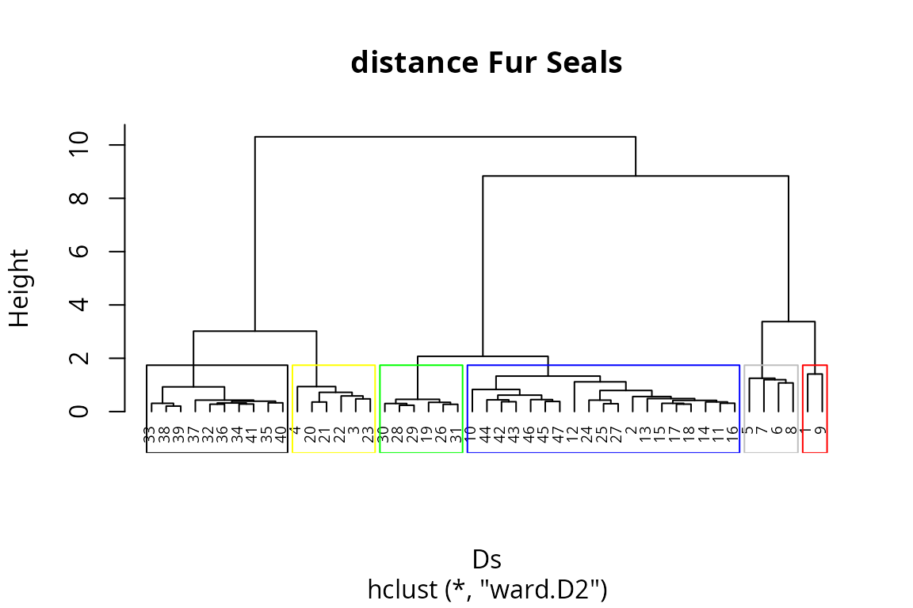
We cut the dendrogram at height Hst to obtain a vector
of cluster membership and copy it in furseals as a
factor:
3.3.1 Individual trophic trajectories for males and females of A. gazella and A. tropicalis
Here we display trophic trajectories of all individuals, in plots corresponding to combinations of species and gender. To facilitate such plots, we create of a vector with the combination of species and gender:
furseals$sp_gender<-paste(furseals$Sexe, furseals$Species, sep=" ")We now create a diagram to display fur seal trophic trajectories in the stable isotope space. Panels correspond to the combination of species and gender. In each panel, X-Y axes are defined by d13C and d15N stable isotope values. Arrows connects all whiskers section SI states from t1 to t30 (i.e. most recent to oldest SI state). Colors corresponds to trajectory clusters and shape to breeding sites:
ggplot(data=furseals,aes(x=d13C,y=d15N,color=cluster,shape=Place))+
geom_point()+
geom_path(aes(x=d13C,y=d15N,group=ID_SITA,color=cluster),
arrow = arrow(length = unit(0.10, "cm")))+
xlab(expression(delta^13*"C"))+
ylab(expression(delta^15*"N"))+
facet_wrap(~sp_gender) +
theme_classic()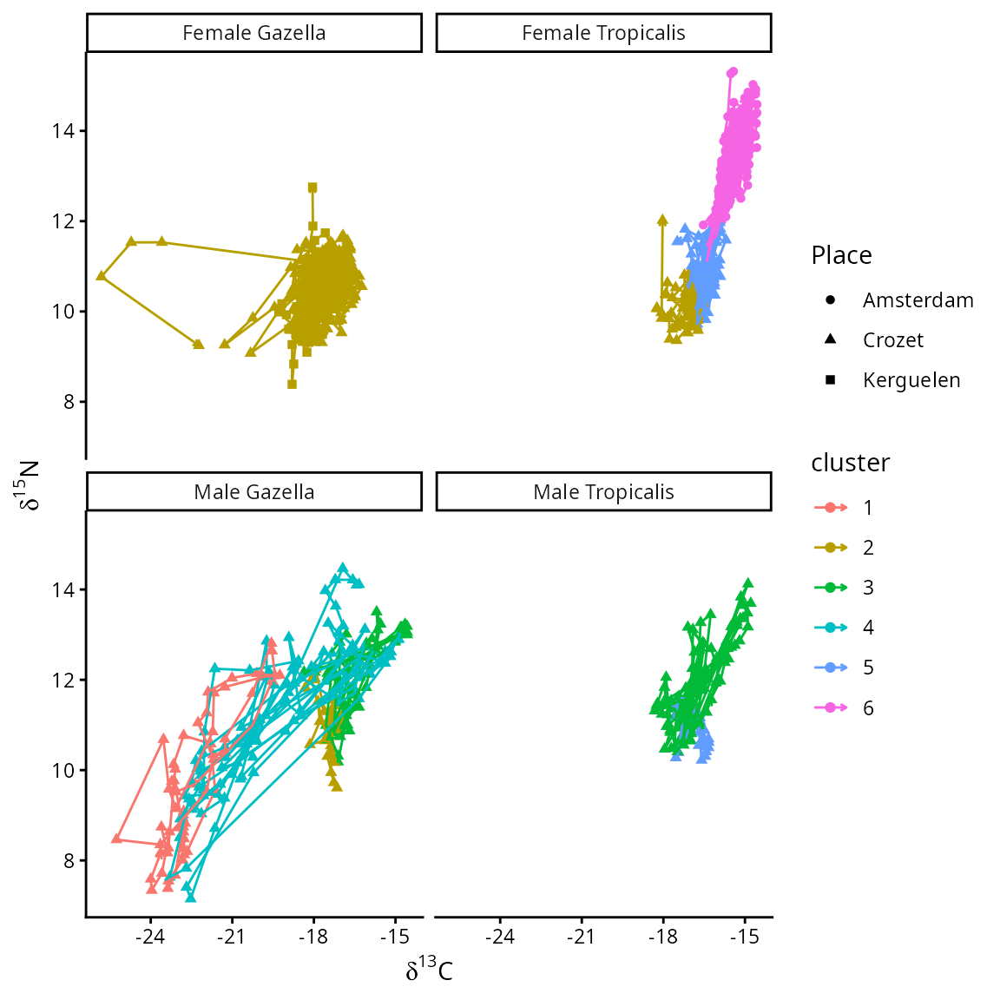
3.3.2 Net changes time series for males and females of both fur seal species
In this sub-section we display net changes time series for all
individuals, in plots corresponding to combinations of species and
gender We prepare a subset of the data called NC:
NC<-Net_changes[,-30]
NC$cluster<-furseals$cluster[1:47]
NC$ID<-as.numeric(rownames(NC))
colnames(NC)<-c(2:30,"cluster","ID")We then prepare the subset. We notably transform NC to a longer format, order the data set and add the vector sp_gender:
NCline <- tidyr::pivot_longer(NC, 1:29,
names_to ="Time_from_present",
values_to="Net_changes",
names_transform = function(x) {as.numeric(x)-1})
colnames(NCline)[1:2]<-c("Clusters", "ID")
NCline <- NCline[order(NCline$Time_from_present, decreasing=FALSE),]
NCline <- as.data.frame(NCline)
NCline$sp_gender<-c(furseals$sp_gender[1:47])We now create the plot to display net changes time series for all individuals in panel corresponding Arrows connects all whiskers section stable isotope values from t1 to t30 (i.e. most recent to oldest stable isotope values). Colours corresponds to trajectory clusters:
ggplot(data=NCline,aes(x=Time_from_present,y=Net_changes,color=Clusters))+
geom_path(aes(x=Time_from_present,y=Net_changes,group=ID,color=Clusters),
arrow = arrow(length = unit(0.10, "cm")))+
facet_wrap(~sp_gender)+
theme_classic()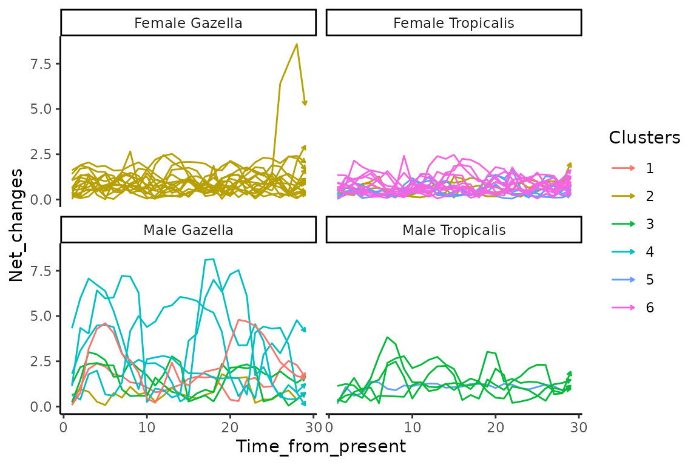
3.3.3 Angle trajectory roses of Fur seals trajectory cluster.
In this sub-section, we plot the distribution of Angle
values in a trajectory rose
We prepare the data set to compute the trajectory rose and transform to
a long data structure. We create a vector of direction to class Angle
values by range of 15°:
Angl<-Angles
colnames(Angl)<-2:30
Angl$ID<-as.numeric(rownames(Angl))
Angl$cluster<-as.factor(groups)
Angl$sp_gender<-furseals$sp_gender[1:47]
Angline<- tidyr::pivot_longer(Angl, 1:29,
names_to ="Time_from_present",
values_to="Direction",
names_transform = function(x) {as.numeric(x)-1})
colnames(Angline)[c(2,3)] = c("Clusters", "Group")
# range 15°
deg <- 15
# vector for range of direction of different bars
dir.breaks <- seq(0-(deg/2), 360+(deg/2), deg)
dir.binned <- cut(Angline$Direction,
breaks = dir.breaks,
ordered_result = TRUE)
# direction labels
dir.labels <- as.character(c(seq(0, 360-deg, by = deg), 0))
levels(dir.binned) <- dir.labels
# angles distribution in each range of direction
Angline$dir.binned <- dir.binned
# sort angles
df_sorted<-as.data.frame(table(Angline$dir.binned, Angline$Clusters))
colnames(df_sorted)<-c("dir.binned","Clusters","nb")
df_sorted = df_sorted[order(df_sorted$dir.binned),]We now create the trajectory rose. Angles were calculated in 2D space () and represented by range (15) of direction. Bars size represent the number of trajectory segments (all individual within each trajectory clusters).
ggplot(data=df_sorted, aes(x=dir.binned, y=nb, fill=Clusters)) +
geom_bar(stat="identity")+
scale_y_continuous(limits = c(0,110), expand = c(0, 0),
breaks = c(0,25,50,75,110),
labels = c(0,25,50,75,110)) +
labs(x = 'Trajectory segment directions within fur seals clusters', y = 'number of trajectory segments') +
coord_polar(start = -(deg/2)*(pi/180)) +
theme_minimal()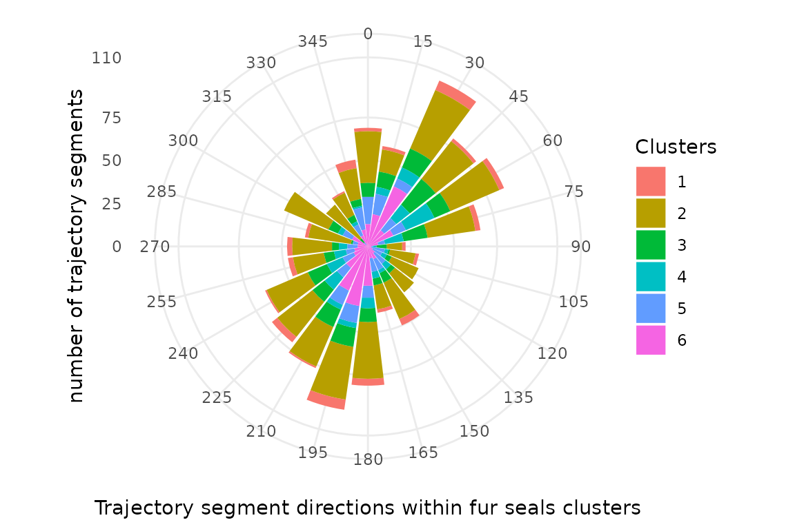
4. Ontogenic stable isotope trajectories of juvenile fishes
In this section, we illustrate how to calculate trajectory metrics to characterize the ontogenic stable isotope trajectories of juvenile fishes. In the following sections, we show how to use these metrics as data to create a trajectory diagram.
4.1 Loading data
We begin by loading the package dataset pike:
data("pike")This is a data set from :
- Cucherousset, J., Paillisson, J.-M., Roussel, J.-M., 2013. Natal departure timing from spatially varying environments is dependent of individual ontogenetic status. Naturwissenschaften 100, 761–768.
Briefly, Cucherousset et al. (2013) released 192 individually tagged, hatchery-raised, juvenile pike (Esox lucius L.) with variable initial trophic position (fin values). Based on values, individuals were classified into zooplanktivorous ( < 10 ‰) and piscivorous ( > 10 ‰) as cannibalism is commonly observed in this species. Individuals were released in a temporarily flooded grassland where pike eggs usually hatch of the Brière marsh (France) to identify the determinants of juvenile natal departure. The release site was connected through a unique point to an adjacent pond used as a nursery habitat. Fish were continuously recaptured when migrating from flooded grassland to adjacent pond. Recaptured individuals (n = 29) were anaesthetized, checked for tags, measured for fork length, fin-clipped to quantify changes in and values, and released.
4.2 Calculating trajectory metrics and identification of trajectory clusters
First, we calculate net changes relative to the initial state for each individual (i.e. the distance between stable isotope compositions at release and at recapture):
Net_changes<-trajectoryLengths2D(pike[,7:8],pike$ID,pike$Time, relativeToInitial=TRUE)
colnames(Net_changes)<-c("Net_changes", "Trajectory")
pike$Net_Changes<-Net_changes$Net_changesThen, we can use function hclust() to conduct a
hierarchical clustering on the symmetric matrix D:
D=dist(pike[,7:8])
pike_x <- defineTrajectories(D, pike$ID)
Ds<-trajectoryDistances(pike_x, distance.type = "DSPD",
symmetrization = "mean", add = TRUE)We cut the dendrogram at height Hst to obtain a vector
of cluster membership and copy it in pike:
Hst=3
colstd<-c("black","yellow","green","blue","grey","red")
hsxy <- hclust(Ds, "ward.D2")
plot(hsxy,hang = -1, main="distance Pike", cex=.6)
x<-rect.hclust (hsxy, h=Hst,
border = colstd)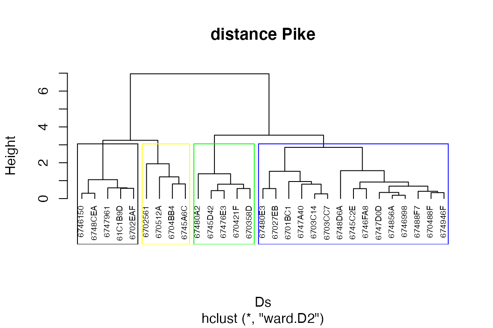
# Store clusters into a new data column
pike$Cluster<-cutree(hsxy, h=Hst)4.3 Trajectory diagram of pike released in the flooded grassland and recaptured when emigrating into the adjacent pond
We prepare the data set to compute trajectory diagrams and density curves:
Pike1<-pike[pike$Time %in% 1,]
Pike1<-Pike1[order(Pike1$ID, decreasing=FALSE),]
Pike1$Net_changes<-0
Pike2<-pike[pike$Time %in% 2,]
Pike2<-Pike2[order(Pike2$ID, decreasing=FALSE),]
Pike2$Net_changes<-Net_changes$Net_changes
data<-as.data.frame(rbind(Pike1,Pike2))We create the trajectory diagram. Arrows represent trajectory path for each pit-tagged individual. Colors correspond to trajectory clusters. The dashed line separates piscivorous from zooplanktivorous individuals [zooplanktivorous ( < 10) vs piscivorous ( > 10)].
ggplot(data=data,aes(x=d13C,y=d15N,shape=Trophic_status_initial))+
geom_point(aes(size=Net_changes))+
geom_path(aes(x=d13C,y=d15N,group=ID,color=factor(Cluster)),arrow = arrow(length = unit(0.30, "cm")))+
geom_hline(yintercept=10, linetype="dashed", color = "black")+
xlab(expression(delta^13*"C")) +
ylab(expression(delta^15*"N"))+
theme_minimal()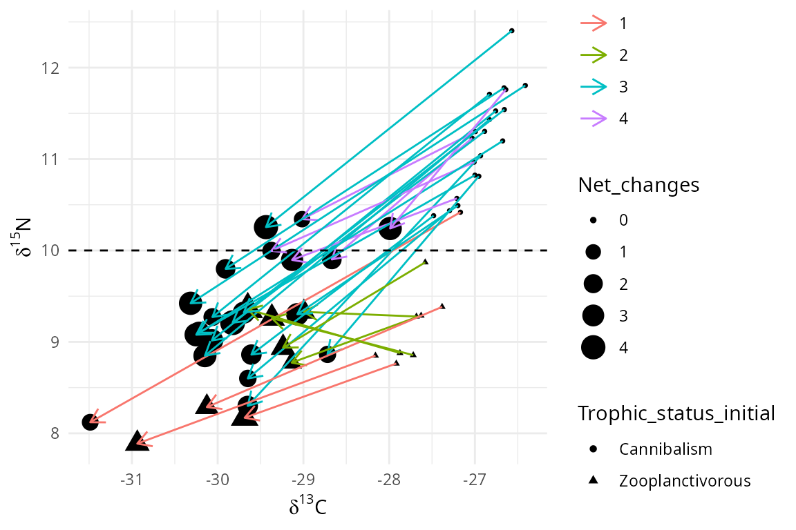
Density curves X represents the distribution of all samples according to values, and capture (green=release; red=departure):
gg_dist_d13C = ggplot(data, aes(d13C, fill=TimeL)) + geom_density(alpha=.5)
gg_dist_d13C = gg_dist_d13C + ylab(expression(delta^13*"C"*" density"))
gg_dist_d13C = gg_dist_d13C + theme(axis.title.y=element_blank(),
axis.text=element_blank(),
axis.line=element_blank(),
axis.ticks=element_blank(),
panel.grid.major = element_blank(),
panel.grid.minor = element_blank(),
panel.background =element_blank())
gg_dist_d13C = gg_dist_d13C + theme(legend.position = "none")
gg_dist_d13C + scale_x_continuous(limits = c(-33, -25))+scale_y_continuous(limits = c(0, 1))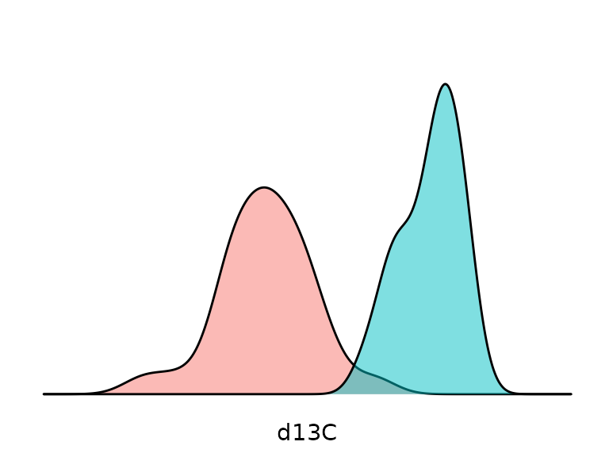
Density curves Y represents the distribution of all samples according to values, and capture (green=release; red=departure):
gg_dist_d15N = ggplot(data, aes(d15N, fill=TimeL)) + geom_density(alpha=.5)
gg_dist_d15N = gg_dist_d15N + ylab(expression(delta^15*"N"*" density"))
gg_dist_d15N =gg_dist_d15N
gg_dist_d15N =gg_dist_d15N + coord_flip()
gg_dist_d15N =gg_dist_d15N + theme(axis.title.y=element_blank(),
axis.text=element_blank(),
axis.line=element_blank(),
axis.ticks=element_blank(),
panel.grid.major = element_blank(),
panel.grid.minor = element_blank(),
panel.background =element_blank())
gg_dist_d15N =gg_dist_d15N +theme(legend.position = "none")
gg_dist_d15N + scale_x_continuous(limits = c(7, 14))+scale_y_continuous(limits = c(0, 1))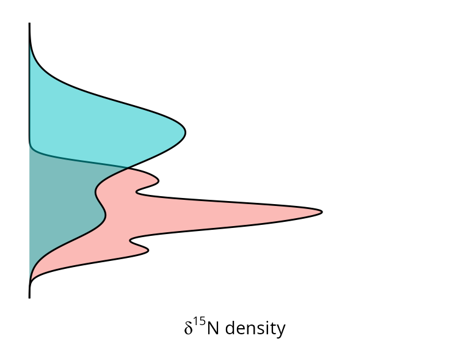
5. Spatio-temporal variability of and modelled isoscapes in the Northeast Pacific
In this section, we illustrate how to use trajectory metrics to characterize the spatio-temporal variability of and modelled isoscapes in the Northeast Pacific in an isoscape trajectory map and a trajectory heat map
The datasets used in this application come from:
- Espinasse, B., Hunt, B.P.V., Batten, S.D., Pakhomov, E.A., 2020. Defining isoscapes in the Northeast Pacific as an index of ocean productivity. Global Ecol Biogeogr 29, 246–261.
Briefly, Espinasse et al. (2020) tested the application of isoscapes modelled from satellite data to the description of secondary production in the Northeast pacific. The output model fits in a 0.25° x 0.25° spatial grid covering the region spanning from 46 to 62°N and from 195 to 235°E and supporting and isoscapes from 1998 to 2017. We subset modelled and values of a 1° x 1° spatial grid from the original modelled dataset. Isoscapes modelled for 2013, 2015 and 2017 were selected as they were characterised by high stable isotope dynamics and consequently constitutes relevant inputs to test our isoscape trajectory map concept. Additionally, a long-term SITA analysis was performed from 1998 to 2017 using directions and net changes calculated for all pairs of dates (1998-1999,… ,2016-2017) as input for a trajectory heat map.
5.1 2013-2015 Isoscape trajectory maps
We begin by loading the package dataset isoscape:
data("isoscape")We calculate Segment lengths and Angle for each stations to assess, respectively, the magnitude and the nature of change in the stable isotope space between 2013 and 2015. We then prepare a data set to compute the isoscape trajectory map with notably: Latitude, Longitude, Years, Angles and segment lenghts values:
sites<-isoscape$station
surveys<-isoscape$Year
Angl<-trajectoryAngles2D(isoscape[,3:4],sites,surveys, betweenSegments = FALSE)
Length<-trajectoryLengths2D(isoscape[,3:4],sites,surveys)
data<-as.data.frame(cbind(isoscape[1:489,],Angl,Length[,1]))
colnames(data)<-c("Latitude","Longitude","d13C","d15N","Stations","Years","Angles","Lengths")
head(data)## Latitude Longitude d13C d15N Stations Years Angles Lengths
## 1 46 195 -24.24369 5.267485 1 2013 210.45063 0.31556226
## 2 48 195 -24.32212 4.973764 3 2013 279.70681 0.28077863
## 3 49 195 -24.28151 5.113458 4 2013 188.55168 0.03490337
## 4 50 195 -24.30105 5.261582 5 2013 147.84429 0.25570108
## 5 51 195 -24.05084 5.302065 6 2013 126.14883 0.32439073
## 6 52 195 -23.92968 5.407169 7 2013 60.21061 0.28423495Angles
need to be transformed for the use with geom_spoke. We then
add transformed values in a new column Angles2.
angle<-data$Angles
Angles2<-c()
for (i in 1:length(angle)) {
Angles2[i] <- c(ifelse(angle[i]==0,(angle[i]-270)*pi/180,
ifelse(angle[i]==180,(angle[i]-270)*pi/180,
ifelse(angle[i]==90,(angle[i]+270)*pi/180,
ifelse(angle[i]==270,(angle[i]+270)*pi/180,
ifelse(angle[i]==360,(angle[i]-270)*pi/180,
ifelse(angle[i]>0 & angle[i]<90 ,(90-angle[i])*pi/180,
ifelse(angle[i]>90 & angle[i]<180 ,(90-angle[i])*pi/180,
ifelse(angle[i]>180 & angle[i]<270,(180+(270-angle[i]))*pi/180,
ifelse(angle[i]>270 & angle[i]<360,(90+(360-angle[i]))*pi/180,"ERROR"))))))))))
}
data$Angles2<-Angles2We now create the Isoscape trajectory map. In this kind of map, Segment lengths and Angles are mapped to illustrate stable isotope spatio-temporal dynamics. Direction of arrows (angle ) illustrate direction (i.e. the nature of change) in the modelled 2D space according to increase and/or decrease in and values (0-90°: + and + ; 90-180°: + and - ; 90-180°: + and - ; 180-270°: + and - ). Length of arrows and colored background rasters illustrate modelled trajectory segment length at each station (i.e. the magnitude of change).
ggplot(data,
aes(x = Longitude,
y = Latitude,
fill = Lengths,
angle = Angles2,
radius = rescale(Lengths, c(0.3, 1)))) +
geom_raster(interpolate = TRUE) +
geom_spoke(arrow = arrow(length = unit(.07, 'inches'))) +
scale_fill_distiller(palette = "RdYlBu") +
coord_equal(expand = 0) +
theme(legend.position = 'bottom',
legend.direction = 'horizontal',
panel.background = element_rect(fill = "white"))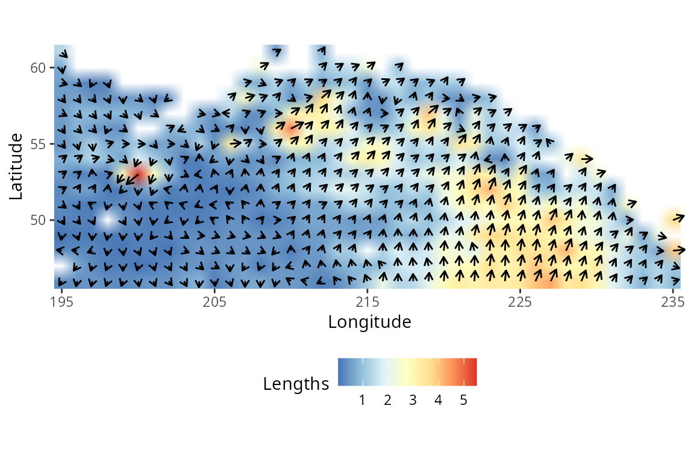
5.2 1998-2017 trajectory heatmap
We begin by loading the package dataset heatmapdata:
data("heatmapdata")heatmapdata is composed of trajectory metrics for all
stations within all inter-annual consecutive periods between 1998 and
2017:
head(heatmapdata)## Latitude Longitude d13C d15N Stations Years Angles Lengths
## 1 46 195 -24.76366 5.451872 1 1998-1999 181.31874 0.30196921
## 2 47 195 -24.75540 5.334980 2 1998-1999 213.76898 0.09285079
## 3 48 195 -24.51122 5.382608 3 1998-1999 183.00600 0.24017740
## 4 49 195 -24.46314 5.481623 4 1998-1999 169.30735 0.34248078
## 5 50 195 -24.27419 5.893179 5 1998-1999 174.57293 0.81250282
## 6 51 195 -24.19454 5.780701 6 1998-1999 13.28445 0.96866737
## Angles2
## 1 4.689373
## 2 4.123009
## 3 4.659924
## 4 -1.384174
## 5 -1.476076
## 6 1.338939We then prepare the data set to create the trajectory heat map. We
create a vector of direction, ranging by 15° between 0 and 360°, to
class Angle
values. We create the vector ISPattern to characterize the
pattern of direction according to changes in both stable isotope values
(0-90°: +
and +
;
90-180°: +
and -
;
90-180°: +
and -
;
180-270°: +
and -
):
#direction range
deg <- 15
dir.breaks <- c(0,15,30,45,60,75,90,105,120,135,150,165,180,195,210,225,240,255,270,285,300,315,330,345,360)
dir.binned <- cut(heatmapdata$Angles,
breaks = dir.breaks,
ordered_result = TRUE)
# bar labels
dir.labels <- as.character(c(seq(0, 360-deg, by = deg),0))
levels(dir.binned) <- dir.labels
heatmapdata$dir.binned <- dir.binned
data<-heatmapdata[,c(6,7,8,10)]
#direction vs SI patterns
data<-data[order(data$dir.binned, decreasing=FALSE),]
rownames(data)<-1:9206
data$ISpattern<- c(rep("+d13C/+d15N",2862),rep("+d13C/-d15N",1840),rep("-d13C/-d15N",2931), rep("-d13C/+d15N",1573))
data1<-as.data.frame(table(data$dir.binned,data$Years))
data2<-aggregate(x = data$Lengths, by = list(data$dir.binned, data$Years), FUN=sum, drop=FALSE)
data2[is.na(data2)] <- 0
data1$Lengths<-data2$x
dfa<-data1
colnames(dfa)<-c("Directions","Periods","Nb_stations","Lengths")The final dataset used to create the trajectory heat map is composed of four variables (“Directions”,“Periods”,“Nb_stations”,“Lengths”):
head(dfa)## Directions Periods Nb_stations Lengths
## 1 0 1998-1999 12 8.634497
## 2 15 1998-1999 9 11.096406
## 3 30 1998-1999 7 7.927697
## 4 45 1998-1999 8 11.138909
## 5 60 1998-1999 4 1.861980
## 6 75 1998-1999 4 1.835733We plot trajectory metrics with respect to period and direction in a trajectory heat map. Angles in the modelled 2D space exhibited by all stations within all pairs of dates (1998-1999,…,2016-2017) are represented by range of direction (15°) according to period. Color gradient from dark blue to yellow indicate the number of stations exhibited by a given range of direction within a given period.
ggplot(dfa, aes(Periods, Directions, fill= Nb_stations)) +
geom_tile() +
scale_fill_viridis(discrete=FALSE) +
theme_minimal()+
theme(axis.text.x = element_text(size=10, angle=90))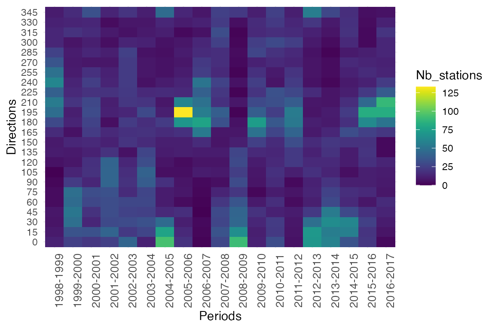
The X bar plot represents the sum of segment lengths across stations and times, 1231 exhibiting the chosen angle. The blue gradient indicates the net change magnitude.
df.Xbarplot<-aggregate(dfa$Lengths, by = list(dfa$Periods), FUN = sum)
colnames(df.Xbarplot)<-c("Periods","Lengths")
bp.x <- ggplot(data = df.Xbarplot, aes(x = factor(Periods), y = Lengths)) +
geom_bar(stat = "identity", aes(fill = Lengths)) + theme_minimal() +
theme(axis.text.x = element_text(size = 10,angle=90),
axis.title.x = element_text(size = 20, margin = margin(10,0,0,0))) +
labs(x = "Periods")
bp.x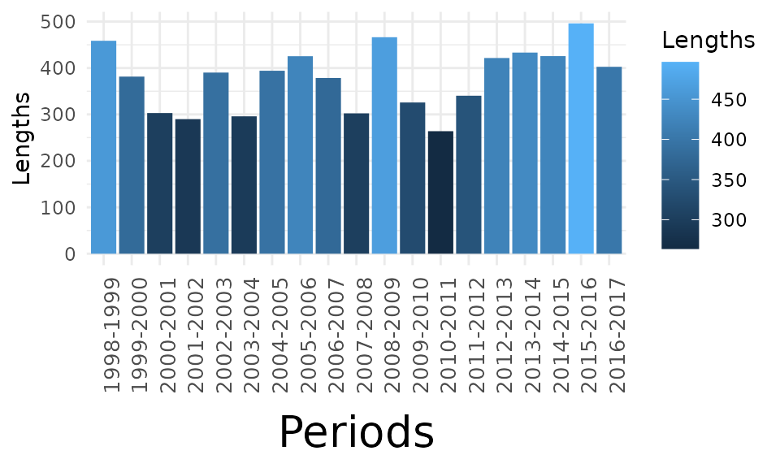
The Y bar plot represents the overall net changes according to range of directions (angle ). Bars are colored according to increase and/or decrease in and values (Pink: 0-90°: + and + ; Blue: 90-180°: + and - ; Red: 90-180°: + and - ; Green: 180-270°: + and - ).
df.Ybarplot<-aggregate(dfa$Lengths, by = list(dfa$Directions), FUN = sum)
colnames(df.Ybarplot)<-c("Directions","Lengths")
df.Ybarplot$ISpattern<- c(rep("+d13C/+d15N",6),rep("+d13C/-d15N",6),rep("-d13C/-d15N",6), rep("-d13C/+d15N",6))
bp.y <- ggplot(data = df.Ybarplot, aes(x = factor(Directions), y = Lengths,fill = ISpattern)) +
geom_bar(stat="identity") + theme_minimal() + coord_flip()
bp.y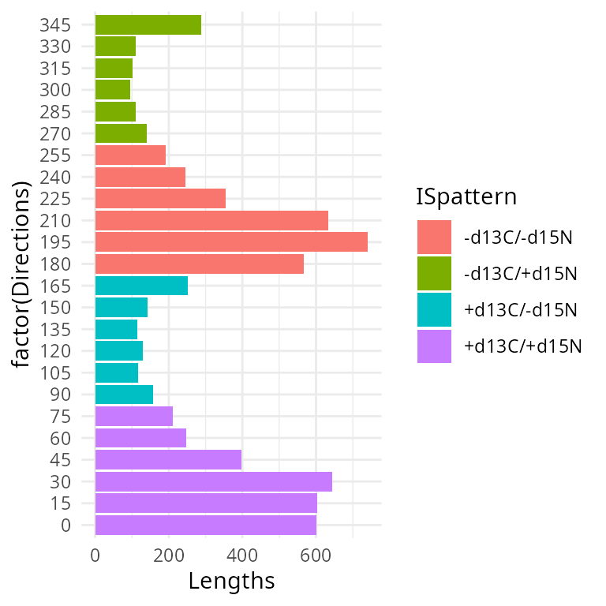